College of Engineering and Information Technology's Research Website
Our client, the College of Engineering and Information technology (COEIT) highlighted some problems in their research website. The issues stem from the decreased usability and user reach in the website. Our team decided to employ user research and help improve the usability of the website focussing on the base requirements of increased usability and improved traffic on the website. The website serves as an information hub into the various dimensions, ranging from the departments, faculty to the myriad of projects. The COEIT prides itself on the excellent research that is conducted in the labs of the various departments. (For example, the Interactive Systems Research Center (ISRC)), fostering a collaborative environment. Hence, we incorporated evaluative research and helped redesign the website for better user retention and increase the average time the users spend on the website.
Team Members:
Anirudh Nagraj (UX Researcher, UX Designer)
Hirak Ray (UX Researcher, UX Designer)
MY ROLE
User researcher responsible for conducting qualitative studies and help improve the usability of the existing product by providing recommendations.
IMPACT
We showed that the proposed changes would lead to greater user retention leading to more time being spent on the website . Efficient navigation throughout the website leading to lesser bouncing and exiting by the users. Better internal structure and content structure to better aid user experience . The efficiency of using the redesign was found to be higher than the original website (based on timed activities). The post questionnaire results show that most participants found the information displayed on the redesign easier to find and easier to read. Furthermore, the feedback button was also easier to identify in the redesign. However, there were a few negative comments about the hover feature of the redesign’s feedback button which may impact visibility. Also, the color scheme implemented had mixed reviews from participants. Some liked that the redesign’s color scheme matched UMBC’s theme, others felt that the change may be too jarring for returning users.
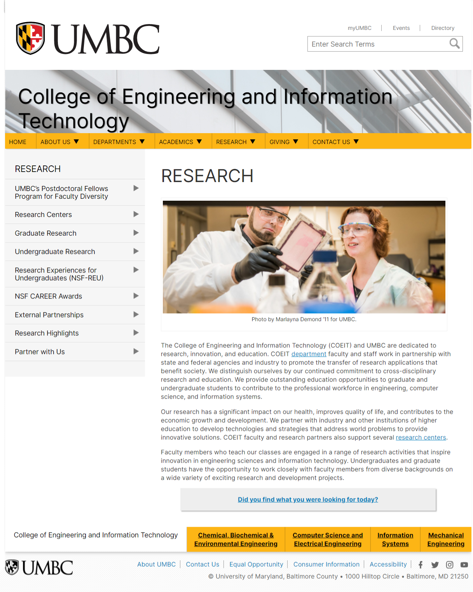
UX RESEARCH
RECRUITMENT
We recruited participants using the snowball sampling technique avoid any sort of bias.
Demographic: Researchers (Faculty and Students) , Non-researchers (Faculty and Students) whose age ranged from 18-70
Total number of users involved throughout the project: 10 (2 - Contextual Inquiries, 3 - User Interviews, 2 - Co Design Sessions, 3 - A/B Testing)
Gender: Any
Ethnicity: Any
Devices: Mobile (Android and IOS), Laptop, Desktops, IPad and other android tablets.
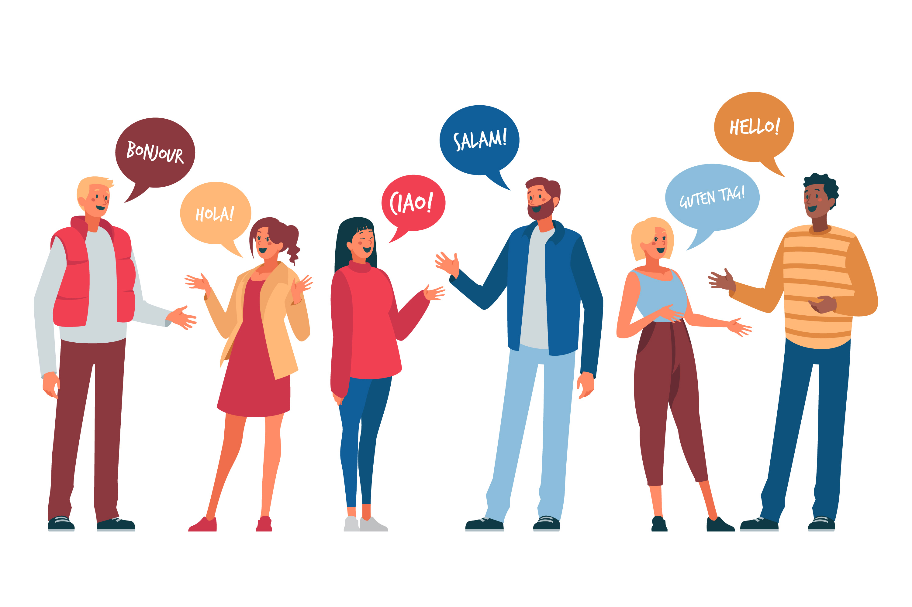
INITIAL USABILITY CONCERNS
The COEIT research website has a lot of usability issues. We are trying to redesign the website to address the initial usability issues mentioned below.
Inconsistent content
Limited to no user engagement
Verbose Content
No clear pathways for research content
The site not designed for an assorment of users.
RESEARCH STRUCTURE
The user research took place over a period of 16 weeks, with the competitive analysis done initially followed by a series of contextual inquiries, and 1-1 context interviews. As this was an inhouse project, heuristic analysis was done by the researchers themselves, taking the role of the "Experts". Heuristic Evaluations were done post the interviews because we wanted to focus on one task at a time. Once we had enough data, we proceeded to create personas that encapsulate our target audience, post which, the redesign was done. Even though the client had given us the initial usability concerns, we proceeded to gain inputs from the users themselves to get a hold on the real problems faced in the website.
Starters - Analyzing the Competitors
For the review and analysis of the website, the team performed Evaluative research, comprising of contextual inquiries, conducted one-one interviews with users to uncover specific insights based on the users' experience with the website. To come up with the redesign, we had to go in depth to understand the painpoints of the users. Before that we wanted to know how the competitiors were doing.
Competitive Analysis
We wanted to know what the other research websites offer. So we diverged and came up with pointers for each of them. Exploring other websites gave us the strengths and weaknesses of our client's website as opposed to others. Information was populated and insights were drawn to aid the future research for the current website.
Insights
Massachusetts Institute of Technology is a research-oriented institution whose research section shows extensive research projects conducted by its students, as well as appropriate language used to attract their competitive recruits.
To attract customers, they use large images which stand out against the white backdrop, enhancing visibility and attention . While Carnegie Mellon University(CMU) and New York University (NYU) have research sections to showcase the centers and institutes it collaborates with, NYU has listed them in alphabetical order as well.
The University of Maryland, College Park is a local competitor, whose research section could possibly cater to students based on local factors, which the client's website could learn from. Being similar in both content and location, studying the University of Maryland College Park research section could shine some light on its usability, and highlight the key differences between them.
The University of Maryland, College Park's research section also utilizes social media well, something which the client's research section has potential for, but is yet to implement effectively.
The team was in the dark about specific experiences of users when they navigate the website and how the users react. Hence, we were keen to observe them in their natural element, their behavior. The main reason why we chose to run contextual inquiries before the interviews is because we could align the questions from the insights obtained from the contextual inquiries. We would have a solid foundation.
Contextual Inquiries
Two participants were recruited and observed in their natural element. Contextual inquiries were conducted because we wanted to about the website experience in general by letting users talk about what they are doing and why when they are doing it - Employing a think aloud protocol.
Detailed information is often not obtained from contextual inquiries as it directly relates to the behavior of the users for a set of tasks and that depends on the action they take.
I think this button is a little weird, it’s on like every page Did you find what you were looking for today? It looks like a button but it is actually a link in a box. That's kinda weird. I don’t want to go there, it scares me.
These campus partners could use more visual hierarchy, like they just have text and the text that is linked is blue and that is what set
Insights
Participant 1 was, for the most part, satisfied with her experience. She enjoyed the visual content via images and videos. She also felt that there is a lot of impressive written content on the website. However, there were a few elements which caused confusion and frustration. Participant 2 , was satisfied with the overall experience of the website. She was impressed by the positioning and the usages of images along with the text to draw attention. There were instances where she felt like there is information overload.
User Interviews
3 participants were asked to participate in a full interview that was semi-structured. Specific inputs from the participants enabled us to strengthen the findings and combine the insights obtained from the contextual inquiries. We wanted to gauge the attitude of the users and gather information on the users’ feelings, motivations or how they use research website.
Maybe when you click on Research, this should be the first thing that pops up. This is what UMBC does. This is far more interesting. Every website says that they do cross-disciplinary research. But it is nice to see examples of it, like they do here with this. But they currently have this at the second to last last item in their menu. So....
I do notice after looking at the menu on the left that a range of items have appeared which do relate to research centers. They should actually be listed in the main content of the page.
Insights
Complaints were often targeted towards, and not limited to, the layout and presentation of textual information.All the participants noticed the lack of explanation for some complicated terminologies and abbreviations used within the website.
Participant 3 felt that most of the information was just “there” and didn’t serve much of a purpose.
Participant 4 felt that the text should be more spaced out, more meaningful and briefer. They were also aggravated at the lack of internal consistency within the website, regarding its navigational menu, image layout and navigation between its subpages.
Participant 5, was flustered by the lack of information and often cut a frustrated figure because she could not find what was being searched for.
Taking the role of "Experts"
Heuristic Evaluation
Heuristic evaluations were conducted on the College of Engineering and Information Technology (COEIT) research section to determine the extent of its functionality and its effect on user experience. To achieve this, we strived to identify specific issues with the website, per Nielsen’s Ten Heuristics. We converged and explored the website and evaluated the interface to find usability problems.
According to the severity ratings assigned by the evaluators, issues of most importance seem to be related to unnecessary loops of navigation, redundant links, outdated images and text, lack of appropriate signifiers to accompany affordances, issues with feedback form access and submission, unclear utility, and overcrowding of information with large blocks of text.
Some of the content in the website is outdated and people may not like it when they read outdated content.
#5. LACK OF ERROR PREVENTION
The feedback form can be submitted without any information. Furthermore,
there isn’t any message in place to confirm whether the user truly wishes to submit the form once the submit button is clicked.
#6. RECOGNITION RATHER THAN RECALL
Images do not link to the information presented in the website. For example,
the picture related to the undergraduate research is not actually related and looks like a train subway.
INSIGHTS
Hirak and I gained deep insights from the research conducted, that included the participants ranging from faculty to researchers to students.
Stressed on the lack of contact information for various resources and services listed on the website, which would otherwise promote collaboration.
Lack of nesting of information caused frustration.
Participants were aggravated by the lack of internal consistency within the website, regarding the navigational menu, and navigation within its sub pages.
Participants felt that information was just 'there' and does not serve any purpose.
At a deeper level, other personality traits include an expressive behavior to do what they want and pursue research, and suppressing emotion when a search fails. Impatient users would cut a frustrated figure due to the loopholes in navigation, or blame the content curators for not giving them the appropriate results. Users also express themselves as independent individuals, exploring interesting areas of research.
Additionally, current students appeared to be focused on the type of research they want to conduct while people looking for funding are hopeful of finding content on the website that can lead to finding it. Think aloud protocols helped us realize that potential users may end up being confused because of the glaring errors in the website’s hierarchy.
Many users may express discontent in being unable to read the website’s content due to the usage of small text (a list of major users is provided as a list below).
We found that users range from being inquisitive about the content presented by the website, to being oblivious about its content due to its outdated nature.
Peronas to generate empathy and profile the target audience
Using the insights and painpoints generated from the research conducted, we created two personas to reflect the key characteristics of our participants, that aided us in developing an understanding of current users and potential users and create the redesigns accordingly.
USER BASE
The College of Engineering and Information Technology's research website is a source of information regarding research in UMBC. It is used by students (Prospective and current; age 18-35) as well as professors (Age 30-70). Prospective students interested in research Current students involved in research Professor conducting research at UMBC External researchers or professors interested in collaborating with the university.
Personas
We attempted to create two personas to reflect these key characteristics of our users, which will develop an understanding of our current users, as well as potential users.
Reduction in the content may decrease information overload.
Eliminating the navigation loop enables smoother navigation.
Text can be spaced out, brief and more meaningful
Placing the 'Research Highlights' tab much further above in the navigation menu would serve the website’s purpose better.
The positioning and the usages of images along with the text to draw attention is useful in the present state, and hence can stay as is.
Reducing the nesting of information can reduce click rate and help users to stay on in the website.
REDESIGN
With the data collected and showed our client where the problem was, we were now ready for the redesign. We wanted to go in phases and start from the skeletal structure of the website. We used Pen and Paper for low fidelity, draw.io for medium fidelity, and Adobe XD for high fidelity mockups and the actual prototype.
Pen - Paper Sketches
Populating all the insights, we converged and made sketches on paper as a starting point for the redesign and went back to Shendelzare to show our progress.
Member Checking
The designed sketches may not have correctly encapsulated our participant’s suggestions. To verify this, we employed MEMBER CHECKING (a technique for exploring the credibility of results. Data or results are returned to participants to check for accuracy and resonance with their experiences) may be used.
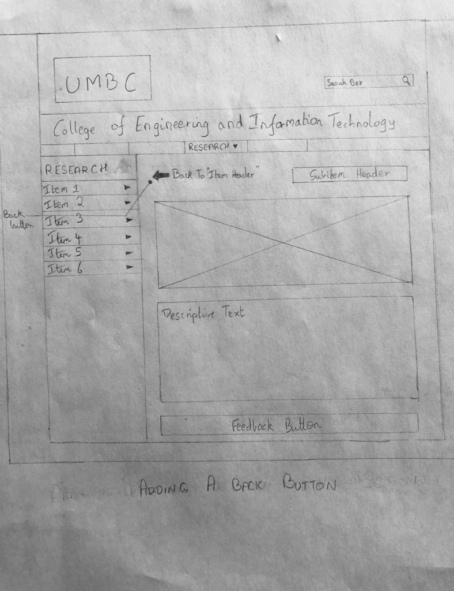
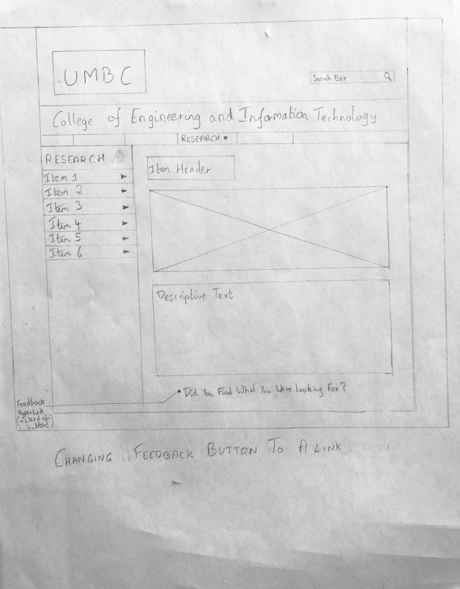
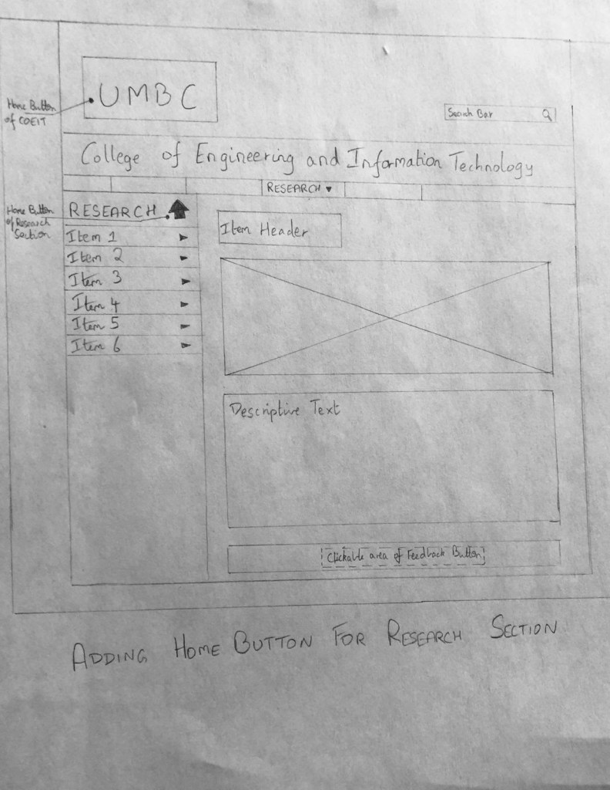
Digital Mockups
Draw.io was used for the medium fidelity mockups.
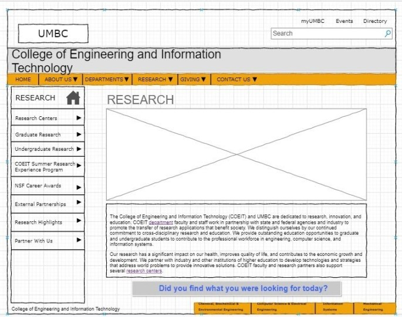
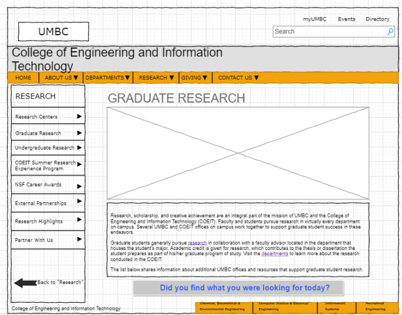
High Fidelity Mockups
Improving the color, fidelity and showing the overall redesign.
HOME SCREEN
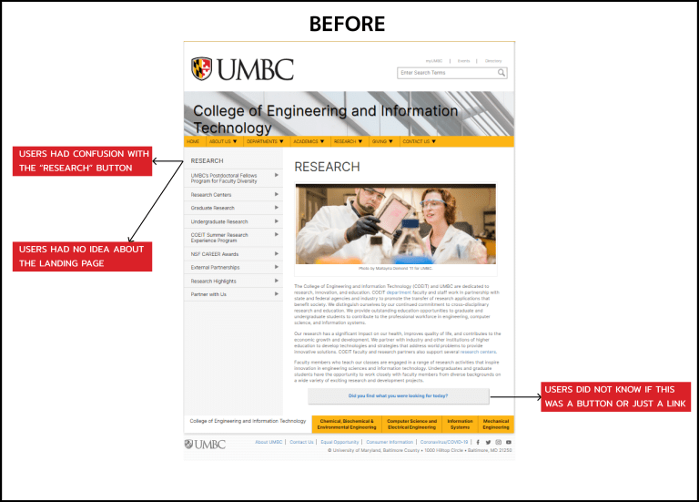
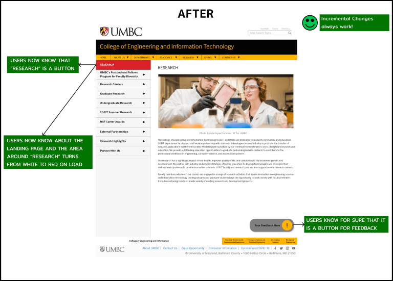
SECONDARY SCREEN
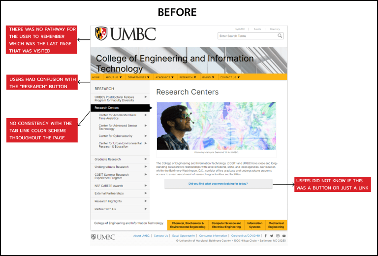
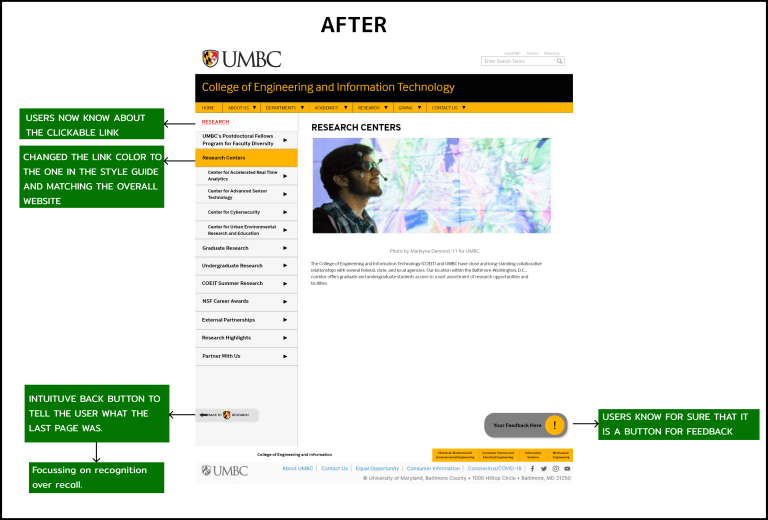
FORMS SCREEN
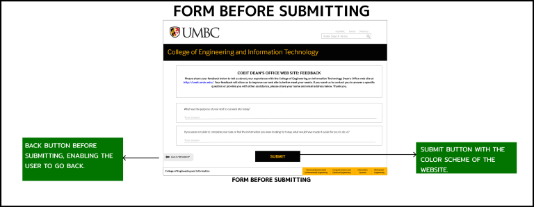
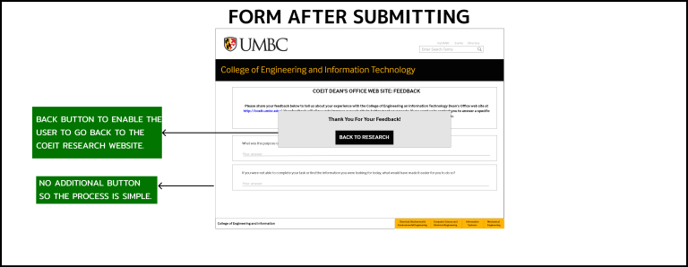
Prototype
The working prototype on Adobe XD
Takeaways
The COEIT research website is a text-heavy website with a lot of cross-page navigation, we wanted to focus on incremental development rather than changing the setup altogether. We have come up with the designs so that all the concerns and pain points are taken care of. We were cautious in choosing the color of the buttons, how the pagination works on the page, and allowing the user some freedom on the reverse navigation, something that the users complained about. Additionally, this was an enjoyable experience as it involved a lot of user research and data synthesis. I got a teammate who helped me grow as the project wore on. In the future, we would like to see this design change being implemented as we believe that our prototype can attract a much bigger audience given our exhaustive and extensive work to refine the existing website